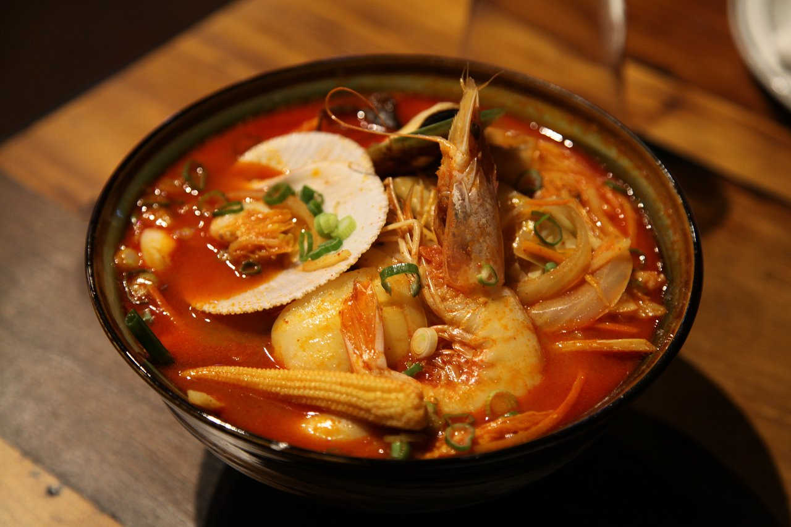

Jjampong

A Korean Chinese dish with a mix of many sea food options along with noodles and a spicy soup
Ingredients
Soup Stock
- Dried Anchovies (1 oz with head and guts removed)
- Dried Kelp (6x6 piece)
- 12 Cups of Water
Vegetables
- Green Onions(4 cut into 2 in lengths)
- Leeks (2 oz cut into 1/2 by 2 in strips)
- Bok Choy (4 oz)
- Cabbage Leaves (3 oz cut into bite-size pieces)
- Onion (4 oz)
- Small Carrot (peeled and cut into 2-inch strips)
Seafood and Meat
- Mussels (8 pieces)
- Large Shrimp (4 pieces)
- Squid (4 oz)
- Small Clams (24 pieces)
- Thin-Sliced Beef (4 oz)
Noodles and Seasoning
- Jjajangmyeon Noodles (1 lb)
- Gochugaru (5 tbsp)
- Toasted Sesame Oil (1 tsp)
- Minced Garlic (1 tsp)
- Vegatble Oil (1/4 cup)
- Fish Sauce (1 tbsp)
- Kosher Salt (1tsp)
Instructions
Prep protein
- Scrub, debeard, and soak mussels in salt water for a few hours
- Shell and devein shrimp
- Remove guts and slice squid into rings
- Soak clams in salt water for a few hours
- Cut Beef into bite-size pieces
Make Stock
- Combine soup stock ingredients into large pot
- Cover and cook over medium-high for 20 minutes
- Reduce heat to low and cook for 20 more minutes
- Strain stock to remove anchovies and kelp
Make hot pepper flake mixture
- Combine 2 tbsp of hot pepper flakes and 1 tsp of toasted sesame oil in a bowl
- Mix well and set aside
Make jjampong
- Heat a large wok over high heat
- Add vegetable oil, garlic,ginger
- Stir fwith a wooden sppon, until garlic is crispy (about 20 seconds)
- Add beef and stir until slightly cooked
- Push ingredients over to one side of the wok
- Tilt pot so vegetable oil is on the opposite side and add 3 tbsp of hot peper flakes
- Stir and mix flakes and oil for (about 1 minute)
- Add green onion, leek, cabbage and stir until vegetables are wilted (3-4 minutes)
- Add 6 cups of soup stock and all seafoods as well as bok choy
- Cover and cook for 7-8 minutes until mussels and clams are open
- Stir in hot pepper flakes mixture from earlier as well as the fish sauce and kosher salt
- Cover and let simmer over low heat
Noodles
- Bring a large pot of water to a boil
- Add noodles and stir
- Cover and cook until tender but still chewy (5-8 minutes)
- Strain and rinse the noodles in cold running water
Final Steps
- Heat soup over high heat
- Divide noodles in seperate serving bowls
- Add soup as well as everything else over top of the noodles